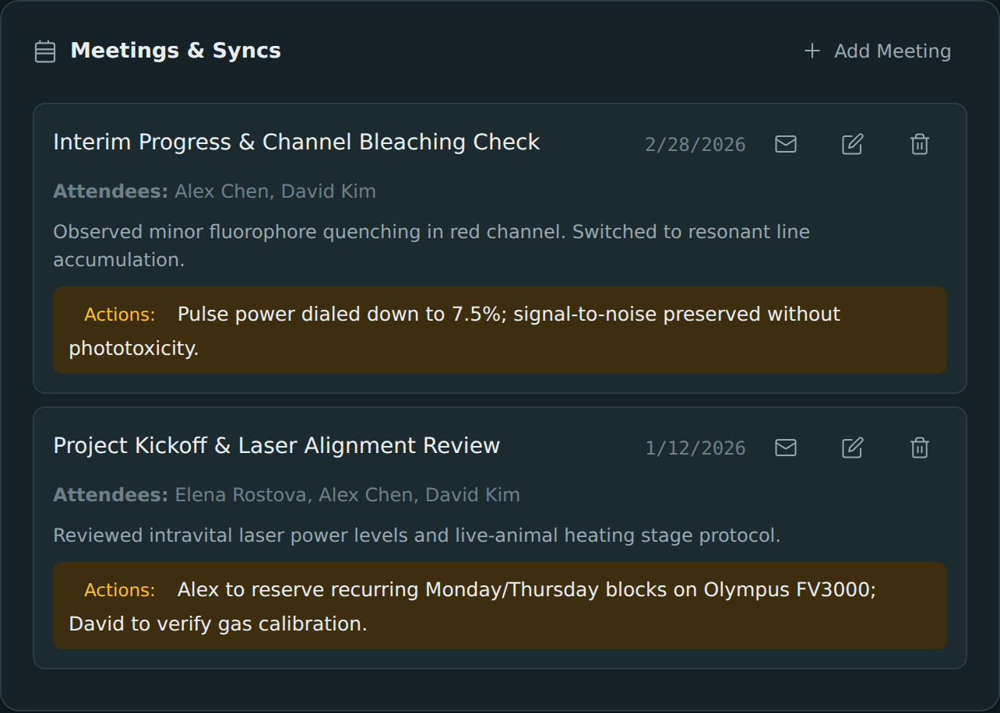

Chapter 12
Emailing Attendees
The app can't send email on its own — but it can save you the typing. Here's the two-minute copy-and-paste workflow.
What you'll be able to do
- Build a ready-to-send email to a booking's attendees in a few clicks.
- Notice and understand a "skipped" count for attendees with no email on file.
- Explain to a colleague why the app opens a blank email instead of just sending one.
To email a booking's attendees
- Open the booking (from the Calendar or a project's Meetings list).
- Choose Email Attendees.
- The app builds three fields for you: a list of recipient email addresses, a subject, and a body — see below for exactly what goes into each.
- Click the copy button beside Attendees, then paste it into your email app's To field.
- Click the copy button beside Subject, then paste it into the subject line.
- Click the copy button beside Body, then paste it into the message.
- Click Open Email App to launch a blank new message in your device's own mail program, ready for those three pastes.
What goes into each field:
- Attendees — the email address of every attendee on the booking who actually has one on file, comma-separated. If any attendees have no email address recorded, the app tells you how many were skipped, so you know to reach them another way.
- Subject — the booking's date and title, e.g.
[2026-03-14] Confocal Training Session. - Body — the booking's date, its notes (flattened to plain text), and any Next Steps / Action Items you've recorded on it.

💡 Tip. If no attendee on the booking has an email address recorded, Email Attendees will tell you so instead of opening an empty message — add emails to the relevant people first (see Add a person).
Why it can't just send the email for you
This app has no server, no account of yours, and no connection to any email provider — see Your data lives here. It genuinely has no channel to send mail through on your behalf, the way a full email client does. The best it can do is hand everything off to the mail program already installed on your own device.
You might wonder, then, why it doesn't at least pre-fill that blank email for you automatically instead of asking you to copy and paste three times. That part is deliberate, for a more specific reason:
🔍 Why it works this way. Handing recipients, subject, and body straight to your mail app has to go through a web link, and those links are capped at a low character limit by your browser and operating system — commonly around 2,000 characters. A booking's notes and action items can easily run longer than that, and if they did, the message would get silently cut off partway through with no warning. Rather than risk quietly losing part of a note, the app shows you the full, complete text on screen with a copy button for each field, and opens a genuinely blank email — nothing to truncate, because nothing is pre-filled.
🧪 Try it. Load the sample data, open any booking that has attendees with email addresses on file, and run through Email Attendees end to end — copy each field and paste it into a real draft in your mail app (there's no need to actually send it).
Check yourself
A booking has 4 attendees, but only 2 have email addresses on file. What happens when you choose Email Attendees?
The app builds the email using just those 2 addresses, and tells you that 2 attendees were skipped because they have no email on file.
Why doesn't the app just fill in the recipients, subject, and body automatically when it opens your mail app?
Because the link used to open a mail app is limited to roughly 2,000 characters by the browser/OS, and a longer note or action list could get silently cut off. Showing the full text with copy buttons, and opening a blank message, avoids losing any of it.